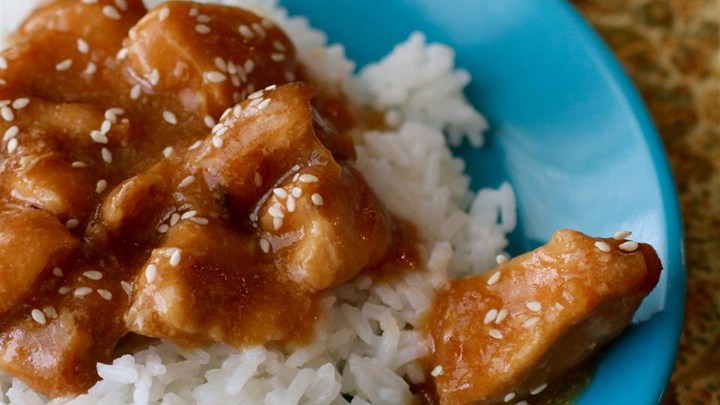
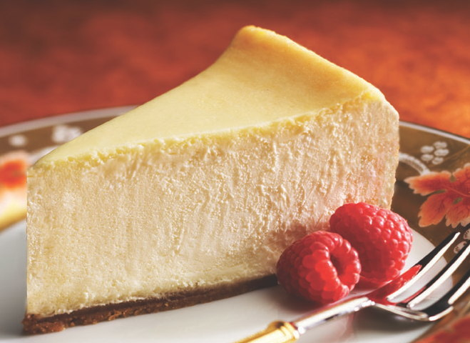
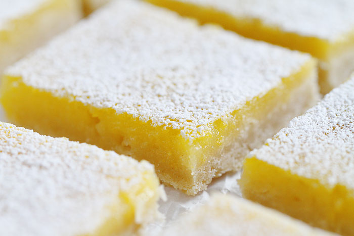

| Ingredients | Directions |
|---|---|
| 1 1/2 pounds skinless, boneless chicken breast halves | Spread chicken into the crock of a slow cooker. |
| 1/2 cup honey | Stir honey, soy sauce, ketchup, minced onion, vegetable oil, and garlic powder together in a bowl; pour over the chicken. |
| 1/4 cup soy sauce | Cook on Low until the chicken is tender, 3 to 4 hours. |
| 2 tablespoons ketchup | Remove chicken from the sauce in the slow cooker to a cutting board. Stir water and cornstarch together to dissolve cornstarch completely; pour into the sauce in the slow cooker until smooth. |
| 2 tablespoons dried minced onion | Cook on High until slightly thickened, about 10 minutes. |
| 1 tablespoon vegetable oil | Cut chicken into bite-size pieces and stir into the sauce. Sprinkle sesame seeds over the chicken and sauce mixture. |
| 1/2 teaspoon garlic powder | |
| 2 teaspoons cornstarch | |
| 3 tablespoons water | |
| sesame seeds, or to taste |

| Ingredients | Directions |
|---|---|
| 15 graham crackers, crushed | Preheat oven to 350 degrees F (175 degrees C). Grease a 9 inch springform pan. |
| 2 tablespoons butter, melted | In a medium bowl, mix graham cracker crumbs with melted butter. Press onto bottom of springform pan. |
| 4 (8 ounce) packages cream cheese | In a large bowl, mix cream cheese with sugar until smooth. Blend in milk, and then mix in the eggs one at a time, mixing just enough to incorporate. Mix in sour cream, vanilla and flour until smooth. Pour filling into prepared crust. |
| 1 1/2 cups white sugar | Bake in preheated oven for 1 hour. Turn the oven off, and let cake cool in oven with the door closed for 5 to 6 hours; this prevents cracking. Chill in refrigerator until serving. |
| 3/4 cup milk | |
| 4 eggs | |
| 1 cup sour cream | |
| 1 tablespoon vanilla extract | |
| 1/4 cup all-purpose flour |

| Ingredients | Directions |
|---|---|
| 1 cup butter, softened | Preheat oven to 350 degrees F (175 degrees C). |
| 1/2 cup white sugar | In a medium bowl, blend together softened butter, 2 cups flour and 1/2 cup sugar. Press into the bottom of an ungreased 9x13 inch pan. |
| 2 cups all-purpose flour | Bake for 15 to 20 minutes in the preheated oven, or until firm and golden. In another bowl, whisk together the remaining 1 1/2 cups sugar and 1/4 cup flour. Whisk in the eggs and lemon juice. Pour over the baked crust. |
| 4 eggs | Bake for an additional 20 minutes in the preheated oven. The bars will firm up as they cool. For a festive tray, make another pan using limes instead of lemons and adding a drop of green food coloring to give a very pale green. After both pans have cooled, cut into uniform 2 inch squares and arrange in a checker board fashion. |
| 1 1/2 cups white sugar | |
| 1/4 cup all-purpose flour | |
| 2 lemons, juiced |
| Ingredients | Directions |
|---|---|
| 1 cup butter or margarine, melted | In a medium bowl, mix together the butter or margarine, graham cracker crumbs, confectioners' sugar, and 1 cup peanut butter until well blended. Press evenly into the bottom of an ungreased 9x13 inch pan. |
| 2 cups graham cracker crumbs | In a metal bowl over simmering water, or in the microwave, melt the chocolate chips with the peanut butter, stirring occasionally until smooth. Spread over the prepared crust. Refrigerate for at least one hour before cutting into squares. |
| 2 cups confectioners' sugar | |
| 1 cup peanut butter | |
| 1 1/2 cups semisweet chocolate chips | |
| 4 tablespoons peanut butter |

| Ingredients | Directions |
|---|---|
| 1 teaspoon vegetable oil | Pour the vegetable oil into the bottom of a slow cooker. Place the pork roast into the slow cooker; pour in the barbecue sauce, apple cider vinegar, and chicken broth. Stir in the brown sugar, yellow mustard, Worcestershire sauce, chili powder, onion, garlic, and thyme. Cover and cook on High until the roast shreds easily with a fork, 5 to 6 hours. |
| 1 (4 pound) pork shoulder roast | Remove the roast from the slow cooker, and shred the meat using two forks. Return the shredded pork to the slow cooker, and stir the meat into the juices. |
| 1 cup barbeque sauce | Spread the inside of both halves of hamburger buns with butter. Toast the buns, butter side down, in a skillet over medium heat until golden brown. Spoon pork into the toasted buns. |
| 1/2 cup apple cider vinegar | |
| 1/2 cup chicken broth | |
| 1/4 cup light brown sugar | |
| 1 tablespoon prepared yellow mustard | |
| 1 tablespoon Worcestershire sauce | |
| 1 tablespoon chili powder | |
| 1 extra large onion, chopped | |
| 2 large cloves garlic, crushed | |
| 1 1/2 teaspoons dried thyme | |
| 8 hamburger buns, split | |
| 2 tablespoons butter, or as needed |